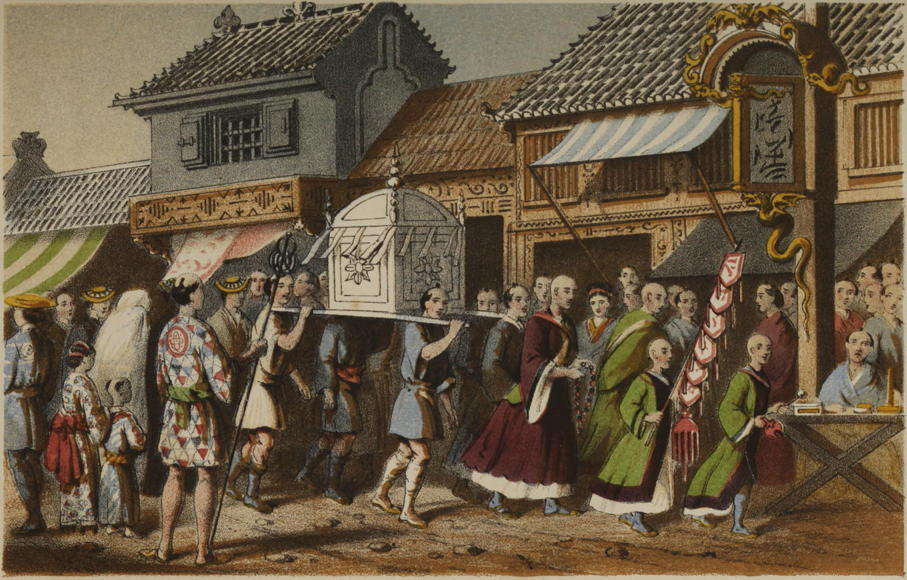

“Japanese funeral”
Narrative of the Earl of Elgin’s Mission to China and Japan (1859)
As we were passing along a street one day a singular-looking group arrested our attention. Two men in front carried gigantic artificial lilies, while another held a long stick, at the top of which was a large paper device, with various other articles, more or less curious. The most extraordinary was a kind of square framework, like a lidless box turned upside down, ornamented with white paper cut in scallops all round, so as to form a frill, and supported on four poles, one at each corner. We had only just completed our scrutiny of these objects when our attention was attracted to the house they were immediately in front of, from which was borne, on the shoulders of two stalwart-looking men, what looked to us exactly like such a barrel as Yarmouth bloaters are exported in. This we found on inquiry contained the mortal remains of an old woman of seventy-two, who, according to the invariable custom of the Japanese, was packed in a sitting posture within this circumscribed space, and thus conveyed to her last earthly home. The box-like construction which we had been inspecting having been placed over the barrel, as one covers eatables to keep flies off, the cortége moved on; four men dressed almost entirely in white closing the most singular funeral procession I have ever yet witnessed.
A Lady’s Visit to Manilla and Japan (1863)
Just at dusk one day we stood in an old cemetery. The cemeteries in Japan, which are always near the temples, are very different from those we see in our country. The stones are crowded closely together, the inscriptions are in Chinese character, and in some stones a place for water is hollowed out, and flowers, with the ever-green leaves of the camellia, are kept in them.
At death the body is carefully washed and the head shaved. The dead person becomes a priest, they say. The relatives gather together, and there is much noise and drinking. The coffin is like the no-ri-mo-no, and the dead are buried in a sitting posture. Money and shoes are often placed in the coffin for the use of the deceased on his journey to Hades. Then the corpse is carried to the temple, and from thence to the grave. A new name is written on the tombstone, and the old one is sometimes forgotten.
The Sunrise Kingdom (1879)
Altogether, a Japanese graveyard, abundantly supplied with tall sculptured monumental stones, many of them hoary and moss-grown, embowered amid dense foliage, and overshadowed by the twisted gables of some sacred edifice, is an object of interest and tranquil beauty, calculated to produce in the mind of the stranger from the Western world a strong impression in favour of a people, whose taste and sentiments upon so solemn a subject seem to be in accordance with his own.
Narrative of the Earl of Elgin’s Mission to China and Japan (1859)
The Japanese, like their neighbours in China, pay great attention to the graves of their dead. They frequently visit them, and place branches of skimmi (Illicium anisatum), laurels, and other evergreens, in bamboo tubes in front of the stones. When these branches wither they remove them and replace them by others. The trade of collecting and selling these branches must be one of considerable magnitude in Japan; they are exposed, in large quantities, for sale in all the cities and villages; one is continually meeting with people carrying them in the streets; and they seem always fresh upon the graves, showing that they are frequently replaced.
Yedo and Peking (1863)
Nagasaki is built on the side of a high hill at the head of the long bay of the same name. Its streets in one direction are long and crooked, conforming to the contours of the ground, while in the other they rise in flights of stone steps, ascending the mountain. The upper part of the slope is occupied very generally with temples and temple grounds, and with extensive cemeteries. As seen from the water, the city and its surroundings present a unique and pleasant appearance. Large trees rise from every part of the town, while here and there thick masses of the rich foliage of the camphor tree, or smaller groves mixed with the lighter green of the bamboo, relieve the monotonous outlines of the level roofs of a Japanese town. Above all these the city is overlooked by massive temples, standing on terraced grounds faced with heavy stone walls, and approached by long avenues of steps and sacred gate-ways. Not less remarkable are the cemeteries, always a particular feature of a Japanese town. These, too, lie above the city, and cover the surface of the hill, following all its irregularities, filling ravines, and mantling the summits and sides of promontories, here creeping into the temple grounds, and there setting a limit to the growth of the town. The hills thus occupied are very steep, and have been made available for this purpose only by raising upon their slopes thousands of small terraces, faced with stone. Indeed, the entire side of the mountain is one mass of hewn masonry. It is a city of the dead, and is traversed in every direction by main avenues and lesser streets, always paved with well-trimmed blocks of stone. Each terrace is divided into small lots a few yards square, which are floored with stone and surrounded with tastefully carved railings of the same material. These are family lots; and in each are several monuments in dark-colored stone, of various forms and sizes. Round and square columns, obelisks, human figures, and tablets, are the most common forms, and upon these the inscriptions are tastefully cut in such high relief, or sunk so deeply into the rock, that, like an Egyptian necropolis, this one and the names of its inhabitants seems intended to last through all time.
Across America and Asia (1870)
◀ MarriageFestivals ▶